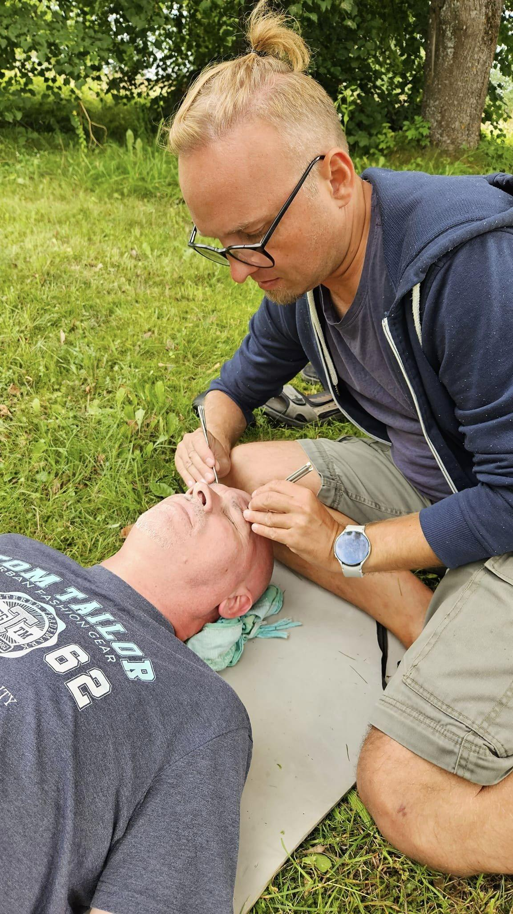
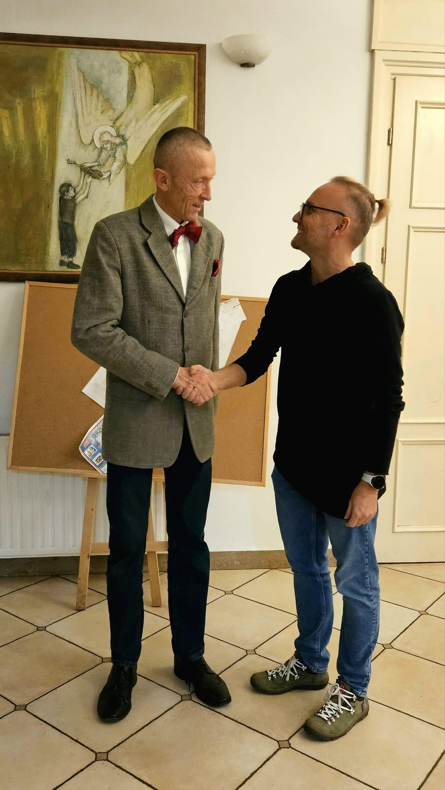
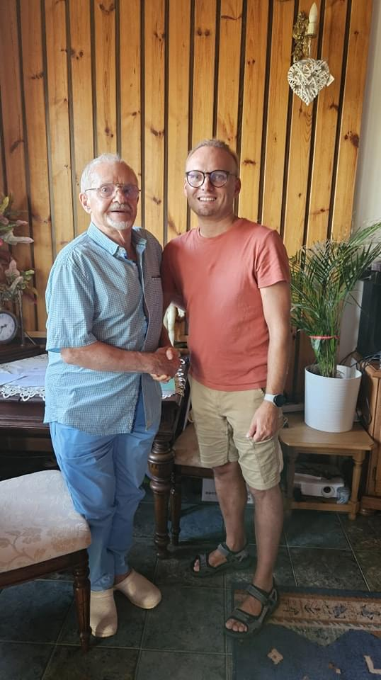

Tomasz Posiadała
Moja droga
Jedną z moich wielkich pasji były zawsze podróże i wyprawy piesze. Będąc daleko na
wędrownych szlakach często miałem styczność z kontuzjami wynikającymi z przeciążeń kręgosłupa i
stawów moich i towarzyszy mojej drogi. Zapragnąłem nabyć umiejętności, które pozwalają na
autorską pracę z ludzkim ciałem i jego zależnościami, m.in. po to by móc pomagać innym w drodze.
Moje dalsze podróże wykorzystywałem m.in. do poznawania specjalistów z różnych dziedzin
(powiązanych z medycyną naturalną) w tych regionach i czerpania z ich doświadczenia.

Zawodowo
Zajmuję się masażami "od zawsze" ale formalnie od 2011 roku, gdy ukończyłem
kierunkowe szkolenia i egzamin w szkole BioStudio w Gdańsku. Tam też nabyłem pierwsze
doświadczenia z terapii manualnej. Postanowiłem uczyć się tej sztuki u najlepszych. Przez
kolejne lata rozwijałem swoje umiejętności chiropraktyka, poprzez liczne szkolenia i praktyki u
cenionego eksperta - bardzo doświadczonej specjalistki terapii manualnej - Joanny Kieliszek, z
której też rąk otrzymałem Dyplom Terapeuty Manualnego.
Wartość wiedzy i umiejętności jakie otrzymałem od pani Kieliszek (którą uważam za mentorkę mojej pracy), jak i dyplom z jej rąk jest dla mnie czymś absolutnie bezcennym. W kolejnych latach moje doświadczenie terapeuty pogłębiałem przez liczne dodatkowe szkolenia indywidualne i praktyki u najlepszych specjalistów z różnych branż terapeutycznych. Ukończyłem również studia podyplomowe z Chiropraktyki w Wyższej Szkole Nauk o Zdrowiu, dzięki którym otrzymałem tytuł certyfikowanego Chiropraktyka. Po uzyskaniu certyfikatu dołączyłem do ogólnopolskiego stowarzyszenia "Chiropraktycy Polscy", w ramach którego regularnie odbywają się szkolenia z zakresu chiropraktyki. W 2021 r. postanowiłem rozszerzyć działalność w moim gabinecie o nowych ludzi, którzy uzupełnią moją terapię. Chciałem stworzyć prawdziwy dream team i myślę, że go stworzyłem.
Wartość wiedzy i umiejętności jakie otrzymałem od pani Kieliszek (którą uważam za mentorkę mojej pracy), jak i dyplom z jej rąk jest dla mnie czymś absolutnie bezcennym. W kolejnych latach moje doświadczenie terapeuty pogłębiałem przez liczne dodatkowe szkolenia indywidualne i praktyki u najlepszych specjalistów z różnych branż terapeutycznych. Ukończyłem również studia podyplomowe z Chiropraktyki w Wyższej Szkole Nauk o Zdrowiu, dzięki którym otrzymałem tytuł certyfikowanego Chiropraktyka. Po uzyskaniu certyfikatu dołączyłem do ogólnopolskiego stowarzyszenia "Chiropraktycy Polscy", w ramach którego regularnie odbywają się szkolenia z zakresu chiropraktyki. W 2021 r. postanowiłem rozszerzyć działalność w moim gabinecie o nowych ludzi, którzy uzupełnią moją terapię. Chciałem stworzyć prawdziwy dream team i myślę, że go stworzyłem.
Moja misja
Moim celem jest budowanie świadomości nt. naturalnych dróg leczenia, oraz walka z
coraz powszechniejszymi chorobami cywilizacyjnymi. Zabiegami redukuję ból, przywracam sprawność
i często ratuję pacjentów przed regularnym zażywaniem leków przeciwbólowych lub operacją. Celowo
daje możliwość swobodnego wypowiedzenia się nt. mojej pracy moim pacjentom (w kilku różnych
źródłach). Nie filmuję moich zabiegów. Dlaczego? Nie czuję się i nie chce być medialnym
celebrytą oraz szanuję prywatność moich pacjentów. Nie chcę też by pacjenci opierali wiedzę nt.
naszych umiejętności i osiągnięć poprzez wyselekcjonowane, zmontowane materiały (jak to robią
niektórzy, inni terapeuci).
Prywatnie
Prywatnie poza "włóczeniem się po świecie" interesuję się grami planszowymi, tańcem,
fotografią, kajakarstwem, narciarstwem, żeglarstwem, psychologią. Jestem też muzykiem. Od 20 lat
gram na bębnach djembe i innych instrumentach perkusyjnych.

1
2
3
4

5
Na zdjęciach: (u góry) Joanna Kieliszek (wybitna specjalistka terapii manualnej), na dole od lewej
dr Henryk Dyczek, (jeden z prekursorów chiropraktyki w Polsce), dr. Jacek Rafało (znany neurolog -
specjalista terapii manualnej), Ajarn Suwat Tara (arcymistrz tajskich technik manualnych), prof.
Mariusz Posłuszny (jedyny w Polsce profesor chiropraktyki, wiceprezes stowarzyszenia "Chiropraktycy
Polscy"), dr. Ferdynand Barbasiewicz - wybitny specjalista medycyny naturalnej - twórca klawiterapii